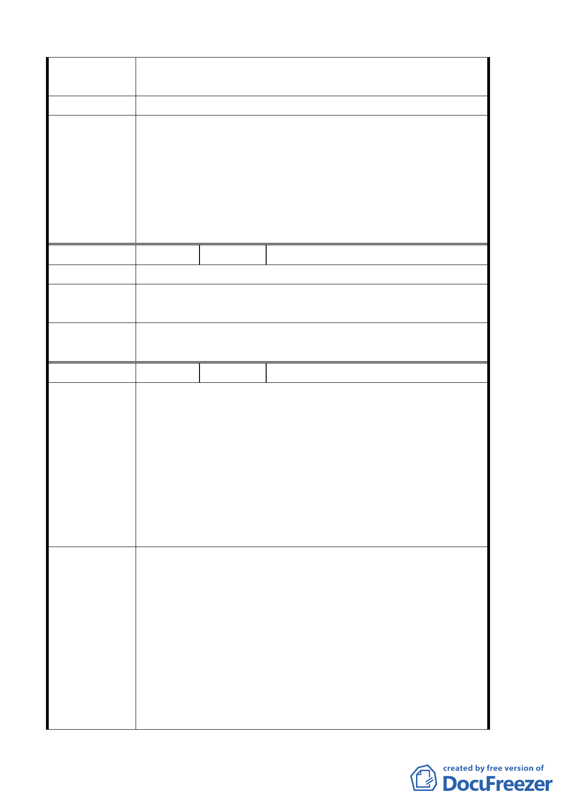

陳情理由
建議辦法
委員會
決議
編號
陳情理由
建議辦法
委員會
決議
編號
陳情理由
建議辦法
1.混凝土結構很健全、建物構造粉堅固，歉難更新。
2.西園路二段 15 號-45 號道路請勿廢止。
暫緩更新。
1.為配合整體發展政策及加速推動本計畫區推動都
市更新，改善當地環境品質，計畫範圍全區劃定
為都市更新單元，並得依都市更新條例及其相關
規定辦理，並以全區原法定容積據以核計都市更
新獎勵容積。
2.本案辦理都市更新事業應併同開闢廣場用地，開
闢完成後須登記為臺北市所有。
2 陳情人 王麗娟
保持原狀是最好低。
若政府要都市更新，承租戶應該是購買的第一順
位，希望慎重考慮。
同編號 1-1；至於承租戶購買權事宜非本委員會審
議範圍，移請申請單位(臺北市都市更新處)參考。
3 陳情人 洪榮發；洪鉉智
1. 在臨時計畫中的廣場，面積不大，面臨西園路二
段 30 米快速道路及服務文化會館前 8 米的道路兩
個路中間，只能稱作空間而已，或稱空地比較適
當，作為戶外展覽空間明顯不夠，效益不大。
2. 若做為市民及小孩老人休閒空間，面臨兩條計畫
道路安全堪慮，試問哪個單位可負責 24 小時空間
安全使用責任。
3. 更新計畫中的住宅大樓，空間規劃期望與服務文
化館有互相稱輔的效果。
1. 若能將廣場放在住三的位置，可以形成小的街
廓，及環抱式的效果，且活動時可以封街，效果
會比一個開放式所謂的廣場來的好，並連結萬華
服飾商圈為一體的規劃。
2. 未來在廣場設計期望能有地標效果，並請與現有
住民參與溝通再建，不辦活動時，也能達到市民
及小孩老人休閒空間。
3. 此次的更新為政府的美意，希望產官學及市場調
查能多研擬方案對此更新有所幫助，並以公開公
平公正為前提來計畫實施，並考慮將此標的性的
6